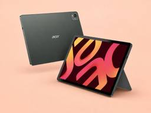
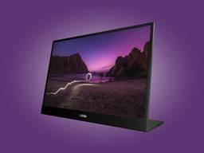
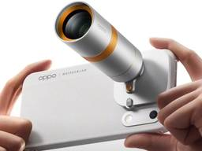
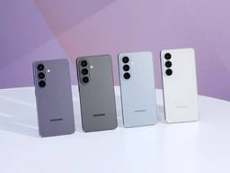
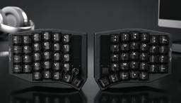

デイリーガジェット
https://daily-gadget.net/
デイリーガジェットは、スマホや海外発のユニークなガジェット、クラウドファンディングの注目アイテムまで幅広くレビュー。生活をもっと楽しく快適にする視点で、日常に驚きと便利さを届けるガジェット情報メディアです。
フィード
「Honor Magic9」シリーズの仕様流出！最大8800mAhバッテリーと2億画素カメラ搭載
デイリーガジェット
中国Honorの次期フラッグシップスマートフォン「Honor Magic9」および「Honor Magic9 Pro Max」の仕様が、9月28日の正式発表を前にリークされました。Weibo上の著名アカウント「Digit...投稿 「Honor Magic9」シリーズの仕様流出！最大8800mAhバッテリーと2億画素カメラ搭載 は デイリーガジェット に最初に表示されました。関連記事:Honor「Pad 20 Pro」がマレーシアで登場！Snapdragon 8s Gen 4と165Hz駆動の12.1インチ大画面を搭載HONOR「Magic 9」は中国で9月28日発表か！映画用カメラ「ALEXA」で知られる名門ARRIと組んだ新カメラ搭載とのことiQooから小型タブレット！日本上陸は？2nm「Snapdragon 8 Elite Gen 6」搭載でiQoo 16と同時発表か
7時間前

「Iconia Duo D12」が米国発売！ペンとキーボード標準付属で約350ドルの12.2型タブレット
デイリーガジェット
Acerの新型Androidタブレット「Iconia Duo D12」が、米国にて349.99ドルで発売されました。着脱式のマグネットキーボード、キックスタンド、アクティブスタイラスペンがすべて標準で付属しており、購入直...投稿 「Iconia Duo D12」が米国発売！ペンとキーボード標準付属で約350ドルの12.2型タブレット は デイリーガジェット に最初に表示されました。関連記事:Retroid「Pocket Duo」が予約開始！120Hz有機EL2枚搭載の2画面Android機が10月中旬出荷へ廉価版「Retroid Pocket Duo Lite」が誕生！大容量6000mAh電池と省電力設計Acer「Iconia iM11」が誕生！5G対応の11.45型タブレットが約4.5万円でWi-Fi難民を救う仕様に
8時間前

「Lenovo L16a」がグローバル発表！最大65W給電とデュアルUSB-C搭載の16型モバイルモニター
デイリーガジェット
Lenovoは、グローバル市場に向けて新型の16インチモバイルモニター「Lenovo L16a」を発表しました。本製品は、映像入力と最大65Wのデバイス給電を同時にこなすデュアルUSB-Cポートを搭載しています。ケーブル...投稿 「Lenovo L16a」がグローバル発表！最大65W給電とデュアルUSB-C搭載の16型モバイルモニター は デイリーガジェット に最初に表示されました。関連記事:Lenovo「Legion Y900」5月19日発表！Snapdragon 8 Elite×144Hz 4K+の本格ゲーミングタブが登場Shokzが1月3日より新春セールを開催！「OpenFit 2+」や「OpenRun Pro 2」などが最大25%オフ画面が外側に回る？Lenovo「ThinkPad Rollable XD」は透明筐体で情報を外部表示、次世代の可変PCコンセプト
9時間前
MSI「Claw 8 EX AI+」廉価版が判明！300ドル安くバッテリー持ちが向上するArc G3搭載機
デイリーガジェット
MSIのポータブルゲーミングPC「Claw 8 EX AI+」に、通常版の「Intel Arc G3」を搭載した廉価モデルの存在が確認されました。上位モデルからGPUコア数とTDP（熱設計電力）を抑えることで、販売価格を...投稿 MSI「Claw 8 EX AI+」廉価版が判明！300ドル安くバッテリー持ちが向上するArc G3搭載機 は デイリーガジェット に最初に表示されました。関連記事:OneXplayer 3が登場！Intel初の専用SoC「Arc G3 Extreme」搭載の3-in-1機が1,399ドルから携帯型ゲーム機向けSoC「Intel Arc G3」が前倒しで発表されるとのリーク情報！14コア構成と高い省電力性で競合AMDを上回るベンチマークが判明かMSIがLunar Lake搭載の新型MSI Clawシリーズを一部市場で予約開始【MSI Claw 7 AI+／MSI Claw 8 AI+】
10時間前
「Motorola Edge 70 Neo」仕様判明！Snapdragon 7s Gen 3搭載で電池持ちが良いスマートフォン
デイリーガジェット
Motorolaの次期ミッドレンジスマートフォン「Motorola Edge 70 Neo」の仕様が、Geekbench 7のベンチマーク結果から明らかになりました。公式発表でインド市場への投入が予告されていた本機ですが...投稿 「Motorola Edge 70 Neo」仕様判明！Snapdragon 7s Gen 3搭載で電池持ちが良いスマートフォン は デイリーガジェット に最初に表示されました。関連記事:Motorola Edge 70 Max、Android勢では希少なマグネット内蔵か。ケース不要のQi2ワイヤレス充電に対応「Motorola Edge 70 Pro+」の全貌が判明！薄さ7.34ミリに6500mAhの大容量バッテリーと5000万画素カメラ搭載Motorola「Edge 70 Pro」発表！144Hz駆動と50MPカメラ3基、6500mAh電池を搭載。日本を含むグローバル展開に期待か
14時間前
「iQOO Pad Ultra」のスペックがリーク！冷却ファンと次世代SoC搭載の小型ゲーミングタブレット
デイリーガジェット
Vivo傘下のiQOOから、新たな小型ゲーミングタブレット「iQOO Pad Ultra」が登場する見込みです。2026年9月の中国発表を前に、Geekbench 7に実機のベンチマークデータが登録されました。16GBの...投稿 「iQOO Pad Ultra」のスペックがリーク！冷却ファンと次世代SoC搭載の小型ゲーミングタブレット は デイリーガジェット に最初に表示されました。関連記事:iQoo「16T」は長時間プレイでも性能が落ちにくい。上位機種だけの内蔵冷却ファンを搭載する高負荷スマホになる可能性iQooから小型タブレット！日本上陸は？2nm「Snapdragon 8 Elite Gen 6」搭載でiQoo 16と同時発表かiQoo「15T」「Pad 6 Pro」が中国で発表！Dimensity 9500＋8,000mAhと13.2インチ4Kタブの新フラッグシップ
15時間前

「Oppo Find X10」シリーズが9月22日発表！8000mAhバッテリーと2億画素カメラ搭載の最新スマホ
デイリーガジェット
Oppoの次期フラッグシップスマートフォン「Find X10」シリーズの公式画像と発表スケジュールが公開されました。中国市場向けに2026年9月22日に発表される本シリーズは、最上位の「Find X10 Pro Max」...投稿 「Oppo Find X10」シリーズが9月22日発表！8000mAhバッテリーと2億画素カメラ搭載の最新スマホ は デイリーガジェット に最初に表示されました。関連記事:OnePlus 16とOppo Find X10 Ultra、インドも見送りか。185Hzと9,000mAh級の最新機が中国専売へ10,100mAh搭載の『Honor Pad X10』が約230ドルで登場！Snapdragon 680と高耐久ボディを備えた11インチタブレットの実力Oppoの次期スマートウォッチ「Watch X3」がリーク！Pixel Watch 4対抗の高性能モデルに注目
16時間前

「Galaxy S27 Pro / Ultra」最新OLED搭載か！省電力化と覗き見防止を備え国内展開にも期待
デイリーガジェット
韓国メディアETNewsの報道により、Samsungの次期フラッグシップスマートフォン「Galaxy S27 Pro」および「Galaxy S27 Ultra」に、最新の「M16 OLED」パネルが採用される見込みである...投稿 「Galaxy S27 Pro / Ultra」最新OLED搭載か！省電力化と覗き見防止を備え国内展開にも期待 は デイリーガジェット に最初に表示されました。関連記事:サムスン「Galaxy S27 Ultra」のビルド番号が浮上、発表の半年前にOne UI 9.5のテストが始動かGalaxyのスマホが最大46,860円オフ！Amazonプライムセールで「Galaxy Z Fold7」「Galaxy S26」がお買い得価格にSamsung折りたたみ3機種、7月22日ロンドン発表か。新型Wide Foldの「4:3画面」で動画もマルチタスクも快適？
1日前
「iPhone Duo」が実装した、画面切り替えの違和感をなくす開閉アニメーションに他社も追随
デイリーガジェット
Apple初の折りたたみスマートフォン「iPhone Duo」が市場に登場し、ハードウェアの形状以上にそのソフトウェアの作り込みが注目を集めています。特に、端末を開閉する際に見られるシームレスなアニメーションは、従来の折...投稿 「iPhone Duo」が実装した、画面切り替えの違和感をなくす開閉アニメーションに他社も追随 は デイリーガジェット に最初に表示されました。関連記事:iPhone18 Proは約15分で半分まで充電可能に！純正40Wアダプタ所有者は買い足し不要Retroid「Pocket Duo」が予約開始！120Hz有機EL2枚搭載の2画面Android機が10月中旬出荷へ「iPhone Duo」が発表！最大44時間の電池持ちとTouch IDを備えたApple初の折りたたみスマホ
1日前

「KEYVRA」がKickstarterに登場！左手デバイスにもなる合体・分割型キーボード 2
2
デイリーガジェット
長時間のタイピングやコーディング、動画編集といった作業において、入力デバイスが身体に与える影響は見逃せません。現在、クラウドファンディングサイトのKickstarterにてプロジェクトが進行中の「KEYVRA」は、ユーザ...投稿 「KEYVRA」がKickstarterに登場！左手デバイスにもなる合体・分割型キーボード は デイリーガジェット に最初に表示されました。関連記事:フィルム途中で「6×6」から「6×17」のパノラマまで画角を変更できる中判カメラ『VZ-6617』がKickStarterに599ドルでこの夏登場!手首に装着するだけで50種以上の筋トレを自動記録。元Teslaエンジニアが放つ289ドルの特化型トラッカー『Fort』の全貌物理キーボード搭載『Titan 2 Elite』詳細判明！キー表面がタッチパッドになる独自機能や新色オレンジを採用、3月MWCで全貌公開へ
1日前